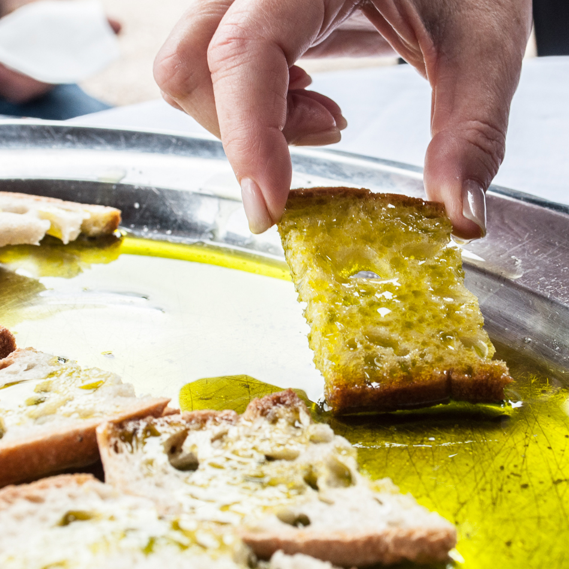

Our love of Italy led us to discover the Il Molino farm in Lazio region about eight years ago, an organically farmed olive grove which has been managed for several generations by the same family. Appreciating the beauty of the place as well as becoming more and more acquainted with the organic farming methods and products led us to think about how we could bring a taste of Italy to Cambridge resulting in the establishment of 'Il Molino UK’ as a means to share our passion for the farm’s products. We were impressed by the methods employed by the farm to produce excellent quality food with their vision that:
‘The choice to produce and live organically means having a respect for nature, for ourselves and an ancient tradition that we feel is our duty to pass on to future generations.'
As a small Cambridge business we now have established a place on the Cambridge market and over the years expanded our customer
base through our supportive clients who have appreciated the quality of the products we offer. Besides the award winning organic
extra virgin olive oils, we also have a selection of pasta based on the variety of wheat known as ‘ancient wheat’, jams, pate and
natural skin care products based on the olive oil produced on the farm.
Come and have a taste.